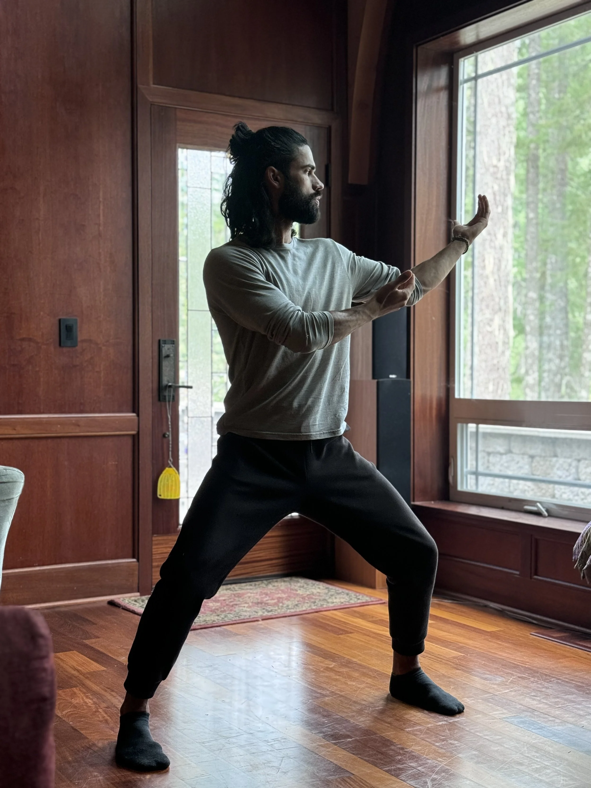

Services
Diverse
Modalities
Each modality offers a distinct pathway into healing and growth. Together, they form a personalized, multi-dimensional practice tailored to where you are and where you want to be.

Modality 01
Story Work & Language Work
Explore how the stories you tell about yourself shape your experience. Through guided language work, uncover new narratives that open possibilities you couldn't see before.
Learn More
Modality 02
Mixed Movement
An integrative movement practice that draws from somatic awareness, martial arts, and expressive movement — reconnecting you to the intelligence of your body.
Learn More
Modality 03
Jin Shin Jyutsu
An ancient Japanese healing art that works with 26 energy locks in the body. Gentle touch restores balance, releasing tension and promoting deep, lasting harmony.
Learn More